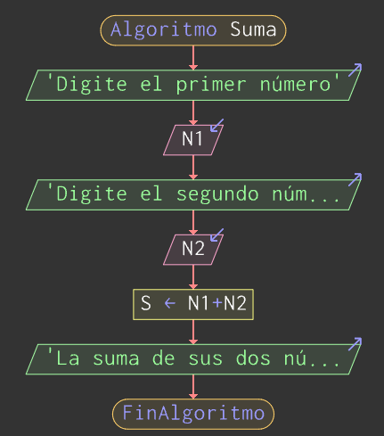

El pseudocódigo es una forma de expresar los distintos pasos que va a realizar un programa, de la forma más parecida a un lenguaje de programación. Su principal función es la de representar por pasos la solución a un problema o algoritmo de la forma más detallada posible, utilizando un lenguaje cercano al de programación. El pseudocódigo no puede ejecutarse en un ordenador ya que entonces dejaría de ser pseudocódigo, como su propio nombre indica, se trata de un código falso (pseudo = falso), es un código escrito para que lo entienda el ser humano y no la máquina.
